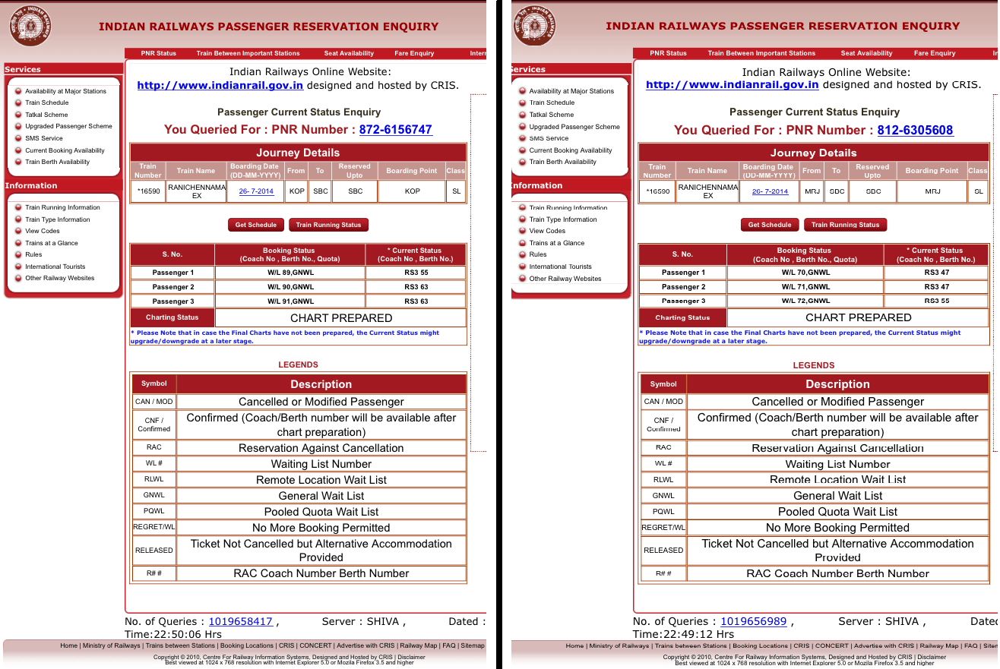

DISCLAIMER: This is not a work of fiction, this is a recount of the events that occurred in S3 coach of train 16590
I usually never travel by train, primarily because my travel plans aren't decided so much in advance. In India, train tickets are sold out within a few days / weeks of opening up for booking and any bookings after that lands up in waiting list which by luck, may or may not get upgraded. So for us bachelors buses are the way to go, albeit slightly expensive they are more readily available.
This one time, I happened to plan in advance to visit my grandparents the week before my admission to IISc. So I booked my tickets in advance and had a confirmed birth for this overnight train. I boarded the train at Dharwad station and found my berth and a lady asked me to kindly shift to the middle berth and I did oblige by doing so.
Fast forward 30 minutes later, the train stopped at the Hubli station and 3 gentlemen boarded the train. A fat looking gentleman from the bunch woke up the 2 ladies sharing the side lower berths (which are RAC seating) opposite to me, claiming that the berth belongs to him. The 2 ladies notify the man sitting in the adjacent berth (presumably the husband/dad). The husband/dad objects and claims the TTE - Travelling Ticket Examiner, had given him the 2 seats. The debate got ugly and soon escalated into a fist fight with regional language curses being hurled from either side and each accused the other of lying. The attention of the whole coach and onlookers was now drawn to the fight but the TTE was nowhere to be seen.
Enter me into the scene; got down from my middle berth uncomfortably as the crowd had gathered around my berth and checked the tickets of both parties. The TTE had signed off on both the tickets which had been upgraded from Waiting list to RAC. The first one had 55/2 & 63/1 , second one also said 55/2 and 47/1 allotted to them. Ouch!!
I took out my phone and quickly got onto PNR enquiry site to check the status. To my surprise, the fat man quickly said "Mei jhoot bol sakta hun, lekin phone jhoot nahi kahega" (I can possibly lie but the phone can't). The whole cabin was now looking at me and my phone. A bunch of tech savvy guys understood and dictated out the PNR number and we found out that the TTE had made a mistake and it should have been 55/1 & 63/2 for the first and 55/1 & 47/2 for the second. Both parties quickly accepted the decision, no questions asked! and the matter was settled.
These were common masses travelling in 2nd class with no "software background" which brings me to the reason I wrote this blog, to draw your attention to a few things happening in India:
1. The fact that people are aware of technology but don't have the reach to it. Had the two parties done the same PNR check online before boarding the train, there wouldn't have been a battle.
2. The fact that people believe in technology. The way no one raised any concerns against the decision and similarly that ==mind boggling== Hindi statement was made.
3. Technology like this can be used for the betterment of the masses. Everyone in India owns a mobile phone irrespective of social and economic status and it's growing by the day. It reminds me so much of the Idea mobile Internet advertisement.
4. Then there are more obvious ones like simple technology can overcome human errors
I am a patriot and an idealist and I'd like to believe that most of our problems, due to our huge population and poverty, can be overcome by such simple technology. I am reminded of Bill Gates note on India's progress. The awareness is there, we just need to reach the masses. The combination of both will make India reign supreme for the next decade or so. Developed nations aka "super powers", you have been warned! India is on the right path in some ways.
Funny enough, one of my travel companion who seemed scanty and poor by his dressing came and asked me which "app" did I use(!!) showing me his Samsung Android phone. A few other savvy guys in train and myself exchanged a few smiles for my presence of mind and for being the accidental hero (Heh☻ heh☺) and we all went back to sleep.
P.S: If you still didn't believe me here are the PNR status screenshots:

← Back to Blogs
Are we on the right "Track"?
adarshpatil
27th July 2014